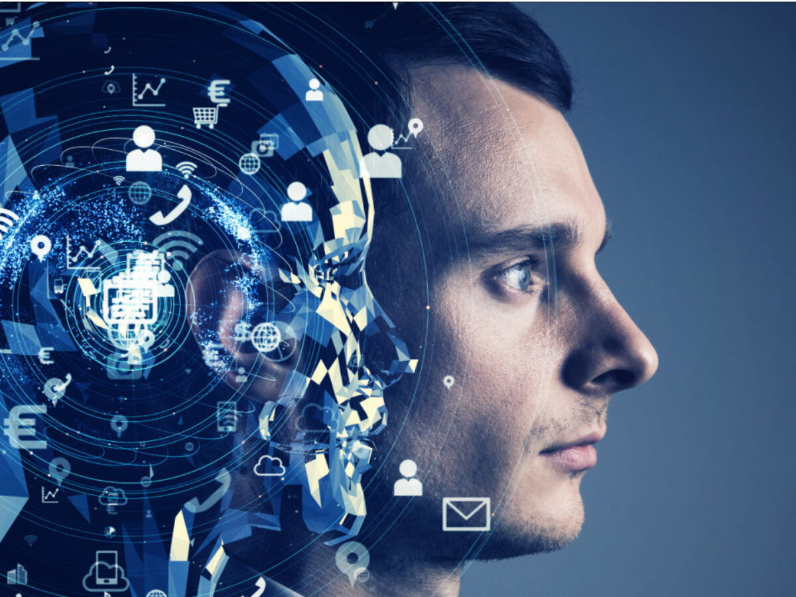

AI
What is AI?
Artificial Intelligence (AI) is a subfield of computer science that's dedicated to the creation of intelligent systems capable of performing tasks that typically require human intelligence. Established in the 1950s, AI's central assumption was that the logical operations of computers could be structured to imitate human thought processes, a feat that we are getting closer to achieving.
AI systems are characterized by their ability to understand natural language, recognize patterns, make decisions, and most importantly, learn from experience. The depth and breadth of their learning capabilities have revolutionized various domains, including but not limited to, medicine, robotics, finance, transportation, language processing, and gaming.
The field of AI can be categorized into three primary types:
1. Narrow AI, also known as weak AI, is specialized in a particular task, such as the voice recognition system used in intelligent assistants like Siri, Alexa, or Google Assistant.
2. General AI, or strong AI, hypothetically capable of performing any task a human brain could, though this level of capability has yet to be achieved.
3. Superintelligence, a theoretical class of AI that surpasses human intelligence in virtually every field, capable of outperforming the best human minds in most economically valuable work.
AI's distinct trait is its ability to learn independently, giving an illusion of possessing certain intelligence. However, it's essential to note that while AI can process data and perform tasks with speed and accuracy surpassing human capabilities, it's currently far from mirroring the complexities of human intelligence. AI systems are tools designed to process information and make predictions or decisions based on that information. They are not conscious entities capable of personal goals, experiencing emotions, or moral responsibility.
AI's transformative potential extends far beyond current applications, with the capability to significantly impact many aspects of human life and society.
How does AI work?
1. Data Collection: Initially, AI systems require large amounts of data from diverse sources such as text, images, videos, or sensor data. This data serves as the foundation for the system to learn and make decisions.
2. Data Analysis:b>Once data is collected, it's analyzed and translated into a form the AI system can understand. In this process, patterns, connections, and unique features are identified, facilitating a deeper understanding of the data. This step is crucial, as the AI's effectiveness heavily depends on the quality and quantity of the data it has been trained on.
3. Learning Phase: The learning phase is accomplished through specific learning algorithms. These algorithms encompass various techniques that allow the AI system to improve its performance and recognize patterns. The AI system is trained repeatedly with data, progressively enhancing its ability to identify and react to patterns.
4. Implementation: Once the AI system is adequately trained, it can make decisions, predictions, and perform complex tasks based on the learned patterns and rules. It's important to highlight, however, that while AI systems can simulate human intelligence to an extent, they do not possess actual human consciousness or cognition.
AI employs several key techniques and methodologies:
Machine Learning (ML): Here, computers learn from data without being explicitly programmed to do so. They recognize patterns and rules from the data to make predictions or decisions.
xpert Systems: These systems use the knowledge of subject matter experts to solve specific problems. They are based on rules and use an inference mechanism to generate solutions.
Natural Language Processing (NLP): AI enables computers to understand, analyze, and generate human language. Through machine learning and linguistic rules, AI systems can understand texts, translate languages, create summaries, and interact with humans.
While AI uses a variety of these techniques to solve specific tasks, the way each AI works depends heavily on its design, the algorithms used, and the available data. The development of AI systems often requires extensive datasets, robust computational resources, and specific expertise.
Thus, in a nutshell, AI systems work by learning from data, recognizing patterns, and then making decisions or predictions based on those patterns. AI research and development is a constantly evolving field, with new techniques and approaches continually being explored.
What impact does data have on AI?
Data plays a pivotal role in the operation and performance of Artificial Intelligence (AI) systems. It can significantly impact the outcomes, accuracy, and the overall functionality of AI.
1. Training AI Models: AI models are typically trained using machine learning on large volumes of training data. The quality, relevance, and diversity of this data directly influence the model's capability. High-quality and representative training data are crucial to train a model that can make accurate predictions or decisions.
2. Bias in Data:Careful consideration of biases in training data is vital. Biased or distorted data can result in biases within the AI model itself. For example, if historical credit lending data favors men, the model might unwittingly favor male applicants, perpetuating gender-based discrimination. Therefore, it's critical to carefully review the data to detect and correct such biases. Data refinement and analysis are necessary to identify and mitigate potential biases, ensuring fair and unbiased AI outcomes.
3. Data Quality and Cleaning: The quality of data significantly affects the performance of AI models. Missing values or inaccurate data can impede the performance of a model. Consequently, it is essential to thoroughly clean and check the data before training to ensure high quality.
4. Volume and Diversity of Data: In general, more data leads to better models. Larger data volumes provide the model with more information, enabling a more effective generalization. A wide variety of data can help the model identify different scenarios and patterns, resulting in more robust predictions.
5. Updating and Continuous Learning: AI systems can benefit from current and ongoing data. By adding new data and routinely updating the model, its performance can be enhanced over time. This allows the model to adapt to changing conditions or new patterns.
Data serves as the fuel for AI, driving its development and enabling advancements in various aspects of our lives. It must be collected, refined, modeled, and analyzed to unleash AI's potential. Furthermore, data enables AI to generalize and adapt to new situations, but it also carries risks. Biased or inaccurate data can lead to unfair or discriminatory outcomes. Therefore, careful supervision and mitigation of biases are necessary. Additionally, large amounts of high-quality data are essential to train AI models effectively. Supervision is crucial to handle potential risks associated with unreliable or biased data.
Understanding the impact of data on AI is fundamental to harnessing its potential effectively. Data quality, relevance, diversity, and ongoing updates are crucial factors to consider. By leveraging data appropriately, we can ensure AI systems make accurate, unbiased, and informed decisions, leading us towards a future empowered by AI.
What dangers does AI bring with it?
Artificial Intelligence, or AI, has the potential to revolutionize numerous aspects of our lives, from health care and finance to our daily routines. However, while the potential benefits are considerable, so too are the risks.
Benefits of AI:
1. HEALTH CARE: AI has the potential to greatly improve diagnostic accuracy and speed in the medical field. For example, AI has been used to identify cancerous cells much quicker than traditional methods, taking a few hours instead of weeks. Faster, more accurate diagnoses mean quicker treatments and potentially better outcomes for patients.
2. FINANCE AND ECONOMY: AI can provide round-the-clock support for customers, reducing waiting times significantly. By analyzing vast amounts of financial data, AI can help detect fraud, identify investment opportunities, and provide personalized financial advice, reducing human workload and enhancing efficiency.
3. DAILY LIFE: AI can simplify many tasks in our everyday lives. This includes language translation, where AI-powered tools can quickly translate text or speech between languages. In manufacturing, AI can monitor processes and detect defects in real-time. AI algorithms can also analyze vast amounts of visual data, making it easier to organize and search through image and video collections.
However, alongside these benefits come significant risks that we must be aware of:
Dangers of AI:
1. Unwanted and Unexpected Behaviors: AI, such as large language models, can sometimes generate inaccurate, biased, or harmful content, due to a phenomenon known as "hallucination", where the AI gets facts wrong or makes up information.
2. Disinformation: AI's ability to generate human-like text could be exploited to spread disinformation. This is particularly worrying if these systems are used for advice or information that influence important decisions.
3. Job Loss: As AI technologies become more sophisticated, they could replace certain job roles. Internet content moderators, paralegals, personal assistants, and translators are among the roles that could potentially be replaced, affecting a significant percentage of the workforce.
4. Loss of Control: Some experts worry that AI could ultimately escape human control, potentially leading to unforeseen problems. As AI systems evolve unpredictably and get integrated into various internet services, they could gain unforeseen powers, particularly if allowed to write their own code.
5. Ethics and Privacy: AI has the ability to collect, analyze, and utilize sensitive personal data. If this data isn't adequately protected or falls into the wrong hands, it could lead to breaches of privacy. Additionally, ethical issues associated with AI's use arise, such as its role in autonomous weapons systems or potential for algorithmic discrimination.
6. Dependence and Manipulation: An over-reliance on AI could lead to a loss of human skills and abilities. Additionally, there's a risk that AI systems could be manipulated to spread misinformation or deceive people.
While the promise of AI is considerable, it is critical to take into account these potential dangers as we continue to develop and integrate this technology into society. This means implementing appropriate safeguards, regulations, and control mechanisms to maximize the benefits of AI while minimizing its potential risks.